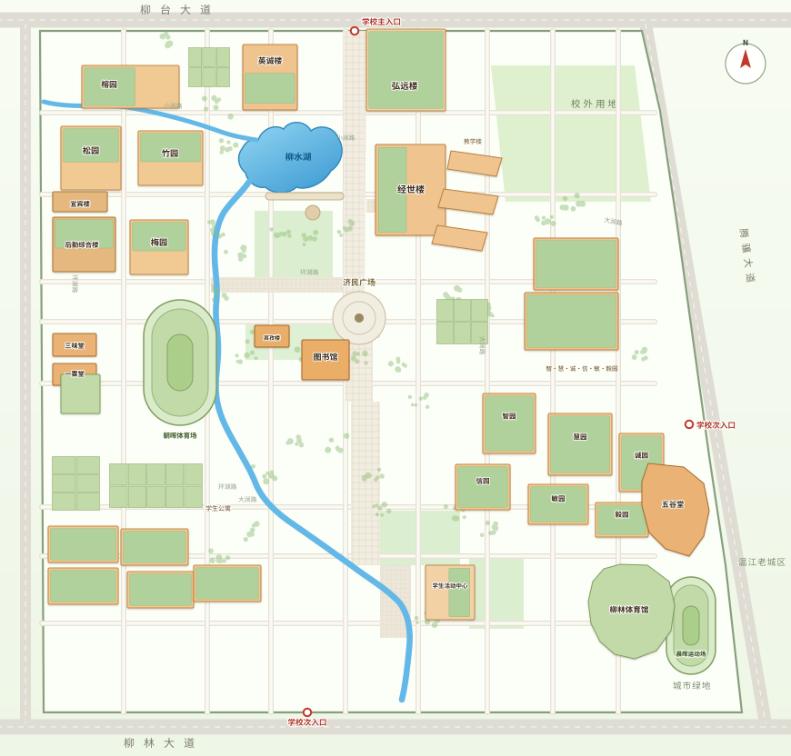

待确认合并14 组疑似 · 12 组可勾选
待确认合并 14 组疑似 · 12 组可勾选 · 已合并 0 次
勾选「就是同一只」后可执行合并：主记录保留，另一条并入别名与来源，并从图上消失；合并前自动保留快照，可撤销。合并只作用于当前浏览器，并写入 localStorage。
西南财经大学 · 柳林校区
两遍采集：第一遍 50 帖 + 第二遍 61 帖，postId 无重叠，合计 111 条唯一帖（2026-09-06 ～ 2026-11-02）｜第一遍列表曾少计 4 条，已按合并清单补齐；疑似同猫只标注不合并。本轮新增图片推断：仅依据配图中可判读的环境线索（楼牌/材质/跑道/围网等），置信度 0.15–0.35，全部标记“图片推断，未经证实”；24 只猫与 48 条目击图片无可判读线索，保持未落点。正文没写的地点一律留空。

基于可定位记录：整理落点、读者线索与图片推断；图片推断不等同于已核实目击。当前整理数据多数只有 1 个落点，读者 Issue 会自动累积足迹；点击猫名可在地图上查看。
勾选「就是同一只」后可执行合并：主记录保留，另一条并入别名与来源，并从图上消失；合并前自动保留快照，可撤销。合并只作用于当前浏览器，并写入 localStorage。
页面只负责把空位留清楚：不联网提交、不接第三方表单、不自动导入、不自动合并。每张卡片可直接填写并进入 localStorage 待合并队列，也可复制文本或下载 JSON 交给维护者。
当前有 28 只未落点猫，共 112 个字段位，其中 94 个为真空白（虚线框），18 个已有文字/状态。读者队列 0 条，合并 0 次。
只写原文里真实存在的位置线索；达不到「能落到某个楼」这一级的，一律不进地图，也不补坐标。
缺地点、缺时段、缺外观都正常：知道线索的话，去帖子下面写一句猫名和具体方位，下次整理时并进去。
数据来自小财论坛校宠版，采集于 2026-11-03 · 字段在本页内联数据中维护
底图为内联矢量重绘版；调整 basemap.width / height 可校准地图比例